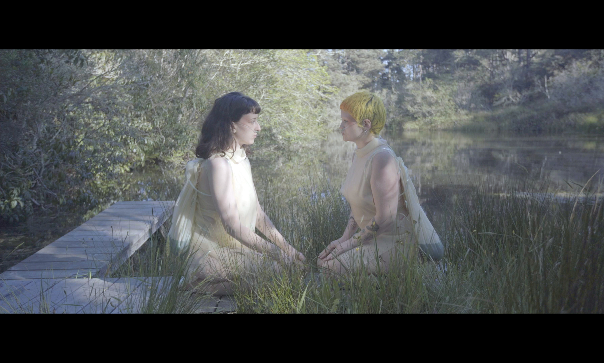
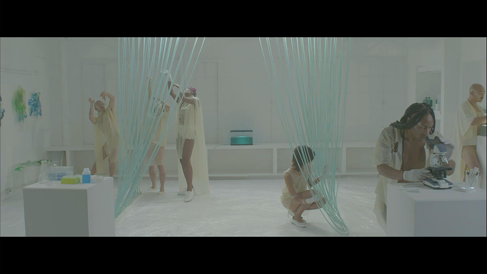
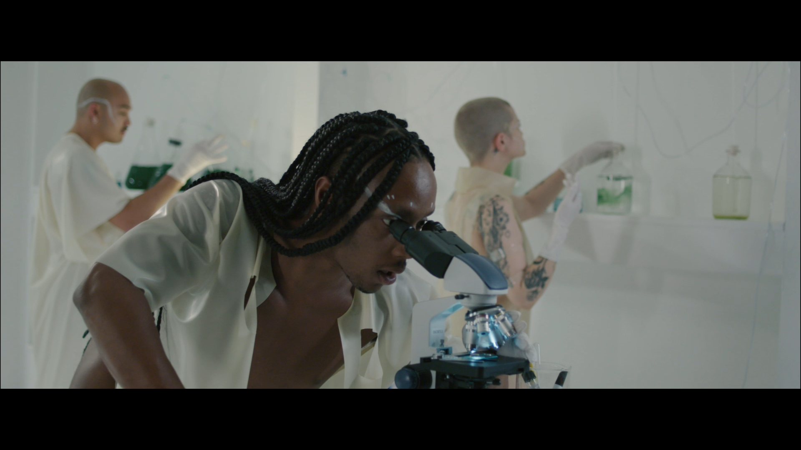
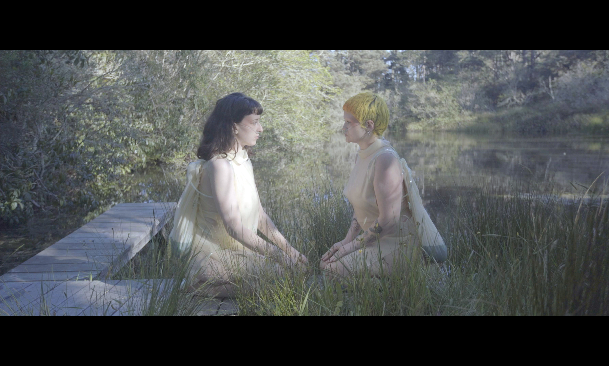
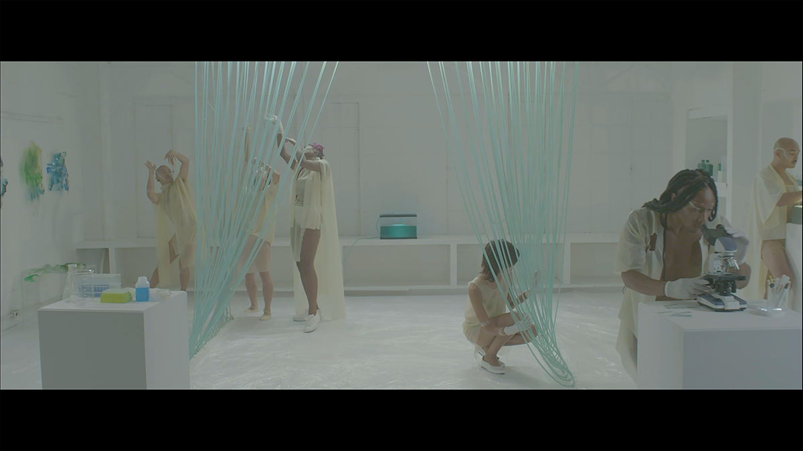
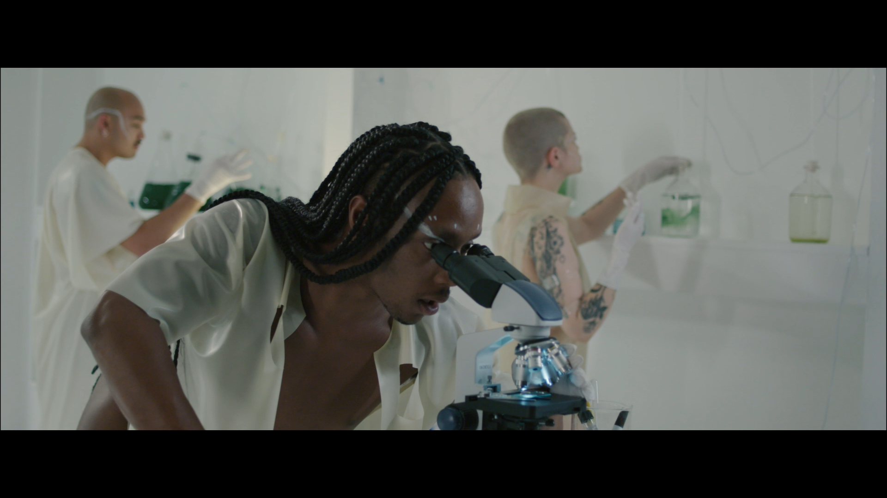

Stills from short Film, watch full film here:
https://vimeo.com/428866862/0c47c200fd
Cyanovisions depicts humans and other species at the edge of society, living in new ways at the intersection of nature and science. Hybrid artist-scientists merge to create new laboratories of their own - both of experimentation related to new forms of life, and of movement and reconnection to nature. Cyanobacteria are uniquely centered - organisms that were the first to create oxygen on the planet and ultimately all life - and now can live in every biome of the world, even in an era of climate crisis. We see devastation from the forest fires in Northern California juxtaposed with vineyards, former Ohlone and Coastal Miwok land, dried and uninhabitable salt flats, and landscapes of algal blooms. Humans participate in embodied ceremonial rituals as performance and experiment, extending the need for transformation and healing from the violence of colonialism, the occupation of native land and the loss of indigenous knowledge and culture, the environment in states of lusciousness and ruin. How can our disconnection with nature and evolve into a meaningful reconnection that still includes our technologies of today, while remaining in harmony with one another? Speculative mutualisms of the future are revealed showing humans living in symbiosis with nature and cyanobacteria in scenarios that are peaceful, disturbing, and surreal.
Directed by: Tiare Ribeaux + Jody Stillwater
Director of Photography: Danger Charles
Camera/Drone Operator: Inti Fernandez
Assistant Director: Dolan Chorng
Actors: Tiare Ribeaux, Kim Ip, Juliana Valente, Micah Morris, Adrian Clutario, Jon Leezy, Dangerous Rose, Tiffany McColl, Megan Noelle Low, Pseuda (Nick Navarro), Artemisia Spenser, Wendellen Li, Kaori Furusawa
Art Department: Keri Shewmaker, Tiare Ribeaux, Dasha Ortenberg
Wardrobe + Costume Design: Megan Noelle Low, Crystal Titus, Tiare Ribeaux
Musical Score: Andrej Hronco
Sound Recordist: Jody Stillwater, Ray Calderon
Makeup: Hah Holton, Artemisia Spencer
Editing: Jody Stillwater and Tiare Ribeaux

  

 
